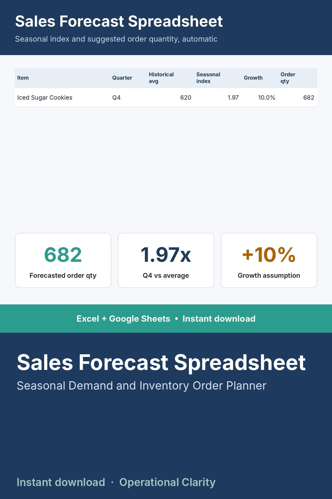

Sales Forecast Spreadsheet

STOP GUESSING HOW MUCH TO ORDER BEFORE YOUR BUSY SEASON.
If you've sold through a full year, you already have the answer to how busy each quarter really gets - you just haven't turned it into a number yet. This sheet does that automatically.
WHAT IT DOES
- Log your actual units sold by item and by quarter
- Automatically calculates each item's seasonal index - how much busier or slower that quarter runs versus its yearly average
- Turns that into a suggested order quantity for the same quarter next time, with your own growth assumption layered in
WHAT'S INCLUDED
- Excel file (.xlsx) - works in Excel 2010 and newer, no macros, no add-ins needed
- Start Here tab with plain-English setup instructions
- Sample data included so you can see it working before you enter your own numbers
WHO THIS IS FOR
Bakery, retail, and seasonal business owners who want a real number to order against instead of a gut feeling about "the holidays are always busy."
INSTANT DOWNLOAD - no physical item will be shipped. Because this is a digital product, all sales are final.